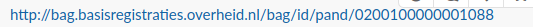
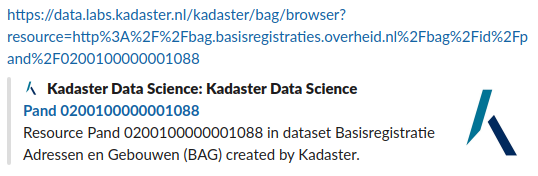
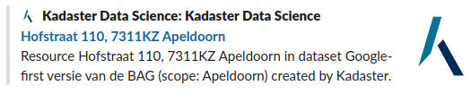

Kadaster ― Metadata 2.0
6 proeven
| A. Dataset | B. Model | C. Instanties | |
|---|---|---|---|
| 1. Vindbaarheid | 1A. Dataset metadata | 1B. Model metadata | 1C. Instantie metadata |
| 2. Kwaliteit (fitness for use) | 2A. Dataset kwaliteit | 2B. Model kwaliteit | 2C. Instantie kwaliteit |
| 3. Knowledge Graph |
1A. Dataset metadata voor vindbaarheid
Open standaarden
De-facto standaarden
- Schema.org
- Open Graph Protocol
- HTML 5
metatags
1A. Dataset metadata die Google ziet: NGR
1A. Dataset metadata die Google ziet: Labs
1A. Dataset metadata in sociale media
https://data.labs.kadaster.nl/kadaster/bag in Twitter.
1A. Dataset metadata in zoekmachines
1B. Model metadata die Google ziet
1B. Model metadata in sociale media
https://data.labs.kadaster.nl/kadaster/bag-vocab/def/Pand in Twitter.
1B. Model metadata in zoekmachines

1C. Instantie metadata voor vindbaarheid
Open standaarden
- RDF
- RDFS
- OWL
- SKOS
- SHACL
De-facto standaarden
- Schema.org
- Open Graph Protocol
- HTML 5
metatags
1C. Instantie metadata voor vindbaarheid
BAG instanties lastig te vinden:
- Huisnummer zit op nummeraanduiding…
- Straatnaam zit op openbare ruimte…
- Plaatsnaam zit op woonplaats…
- Geometrie volgens OGC/GIS standaarden…
Zoekmachines prefereren eenvoud:
- Alle eigenschappen waar mensen op zoeken zijn verbonden aan 1 object.
- Eenvoudige geometrie.
- Maar, well gelinked met de gedetailleerde BAG objecten (
prov:wasDerivedFrom).
1C. Instantie metadata voor vindbaarheid
1C. Instantie metadata: Labs
1C. Instantie metadata die Google ziet: PDOK
1C. Instantie metadata die Google ziet: Labs

1C. Instanties vindbaar in Google Search
1C. Instantie metadata in sociale media
KDP versie
KDP versie binnen Labs
Labs versie
2A. Dataset kwaliteit
Open standaarden
- Data Quality Vocabulary (DQV)
- Provenance Vocabulary (PROV)
- Open Annotations (OA)

2B. Model kwaliteit
“Amsterdamse panden hebben soms bouwjaar 1005.”
Annotatie op type niveau: bijv. pand
Annotatie op eigenschap niveau: bijv. bouwjaar
2C. Instantie kwaliteit
Bereikte resultaten
- Verbeterde metadata publicatie voor datasets, model, en instanties.
- Verbeterde indexeerbaarheid voor datasets, model, en instanties.
- Verbeterde kwaliteits annotaties voor datasets, model, en instanties.
- Verbeterde deelbaarheid op sociale media.
En als we hiermee verder gaan:
- Verbeterde vindbaarheid van datasets in Google Dataset Search.
- Verbeterde vindbaarheid van model en instanties in Google Search.
- Verbeterd hergebruik door kwaliteits annotaties/
Advies
- De standaard “geo-ogc” weg is niet de oplossing: attitude: “We can do it better than google. We are going to beat google…” (wrong. If you can’t beat them, join them)
- Je ziet dat kwartje bij data.overheid.nl wel gevallen is (op dataset niveau/vindbaarheid). Maar zouden we dat niet zelf willen doen?
- Je kunt dit stap voor stap aanpakken.
| A. Dataset | B. Model | C. Instanties | |
|---|---|---|---|
| 1. Vindbaarheid | 1A. handmatig; quick-win; high-impact | 1B. automatische transformatie; kleinschalig | 1C. automatische transformatie; grootschalig |
| 2. Kwaliteit (fitness for use) | 2A. handmatig | 2B. handmatig | 2C. kleinschalig en handmatig óf grootschalig o.b.v. regels |
| 3. Knowledge Graph |
Advies o.b.v. tabel
- Quick win: Dataset niveau in NGR: onze ruwe inschatting 120 uur werk.
- PMs: PDOK/KDP overtuigen: het is “BASIS”
- Niet alleen focussen op vindbaarheid, maar ook op kwaliteit en knowledge graph.
Toetje: Voice Assistants